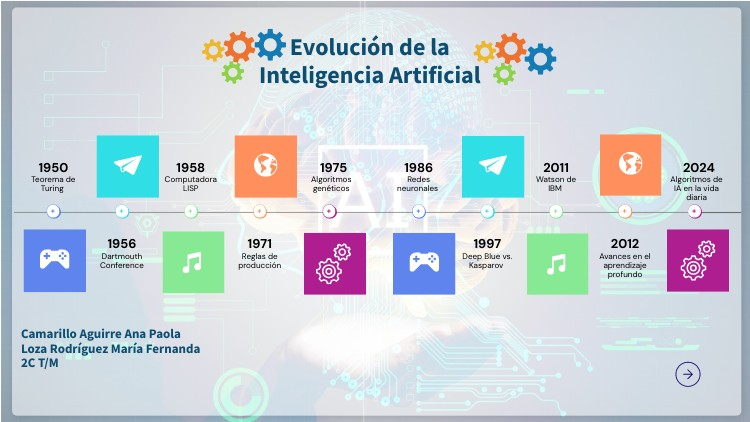
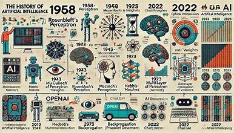
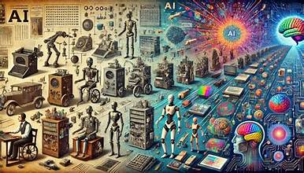

La Evolución de la Inteligencia Artificial
Acerca de
La inteligencia artificial ha evolucionado desde una teoría matemática en la década de 1950 hasta convertirse en una de las tecnologías más importantes de la actualidad, impulsando avances en aprendizaje automático, aprendizaje profundo e IA generativa.
Datos Rápidos
Pioneros de la IA
- Alan Turing
- John McCarthy
- Marvin Minsky
- Geoffrey Hinton
https://es.wikipedia.org/wiki/Historia_de_la_inteligencia_artificial Etapas Clave de la IA
- Fundaciones Teóricas (1950-1956)
- Sistemas Expertos e Inviernos de la IA (1957-1990)
- Machine Learning y Big Data (1990-2010)
- Revolución del Deep Learning (2010-2020)
- IA Generativa y Agentes Autónomos (Actualidad)
Galería


